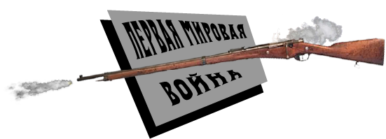
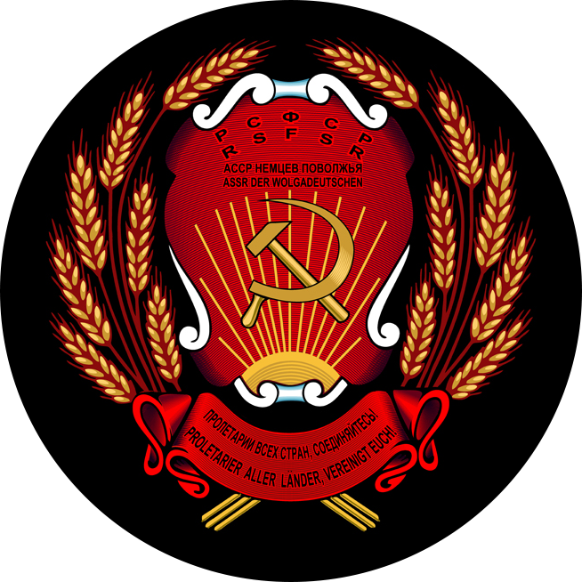
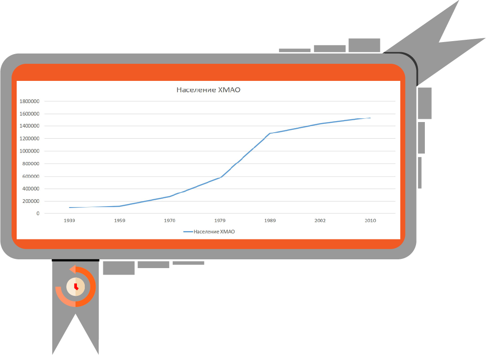

∙ История ∙
-
НЕМЦЫ В РОССИИ
-
ЮГРА
По данным переписи населения 1897 года, в Российской империи
проживали 1.383.300 человек, считавших своим родным языком
немецкий (иного способа определить этническую принадлежность
не было: перепись не содержала вопроса о национальности). Основными
регионами расселения немцев были Саратовская, Самарская, Екатеринославская
(Днепропетровская область Украины), Херсонская, Таврическая (Крым) и другие
губернии. Немецкие колонисты начали заселять Поволжский район еще в 18 веке,
когда Екатерина Великая издала Манифест «О дозволении всем иностранцам, в
Россию въезжающим, поселяться в которых губерниях они пожелают и о дарованных
им правах».
Население территории современного ХМАО-Югры, входившей в состав Тобольской губернии,
на рубеже 19-20 веков составляло около 37 тысяч человек. Около 20 тысяч были
представителями коренных народов (ханты, манси и зыряне). Ведущей отраслью экономики
в то время была добыча рыбы, также развивалось северное скотоводство (оленеводство).
Единственное промышленное предприятие того времени – мыловаренный завод в пос.
Реполовском. Север Тобольской губернии был традиционным местом ссылки политических
заключенных. Именно из Березово бежал в 1907 году революционер Лев Троцкий по пути
в ссылку в Обдорск (современный Салехард).
-
ПЕРВАЯ
-
МИРОВАЯ
Вступление Российской империи в Первую мировую войну против
Германии и ее союзников привело к усилению антинемецких настроений
в обществе. Так, Санкт-Петербург был переименован в Петроград,
прошел ряд погромов домов и коммерческих предприятий этнических немцев,
проживающих в России. Предпринимались попытки запретить им разговаривать
на родном языке. На западных прифронтовых территориях немцы были лишены
своих землевладений, а затем было
принято решение об их выселении в центральные районы страны.
1 августа 1914 года Российская империя вступила в Первую мировую войну на стороне «Антанты». Около 2.000
призывников, проживавших на территории современного Ханты-Мансийского автономного округа – Югры, ушли на
фронт. Однако война не внесла в стабильную жизнь северян каких-либо серьезных изменений. Для России война
закончилась 3 марта 1918 года после подписания сепаратного мирного договора с Германией в Брест-Литовске.

-
АССР НП
-
РЕВОЛЮЦИЯ
19 октября 1918 года декретом Совета народных комиссаров РСФСР
из части территорий Саратовской и Самарской губерний была
образована первая в стране автономная область — автономная область
немцев Поволжья (использовалось также название трудовая коммуна
немцев Поволжья)
19 декабря 1923 автономная область преобразована в Автономную
советскую социалистическую республику Немцев Поволжья площадью
28 200 км², в которой проживало 576 тыс. жителей. Одной из целей
предоставления автономии теперь уже советским немцам была пропаганда
социализма в самой Германии.
В 1920-х годах большевики ожидали
наступление «мировой революции», одним из форпостов которой должна
была стать Германия, и они использовали каждую возможность, чтобы
продемонстрировать рабочему классу в европейских странах преимущества
социалистической идеологии: народы в СССР действительно получили
право на самоопределение. В АССР Немцев
Поволжья немецкий язык был установлен в качестве
второго языка делопроизводства и как язык обучения
в школах.Этнические немцы составляли около 65% населения.
Поволжья немецкий язык был установлен в качестве
второго языка делопроизводства и как язык обучения
в школах.Этнические немцы составляли около 65% населения.
Сначала территория ХМАО-Югры оставалась в стороне от революционных волнений. Однако, когда в конце 1917 года
из армии вернулись солдаты, подвергшиеся большевистской пропаганде, в городах начали создаваться Советы и
общественные коммуны. В 1919 году Тобольский Север стал ареной активных военных действий между красными и
белыми. Города переходили из рук в руки, пока в феврале 1920 года территория Югры не была окончательно занята
большевиками. Закончилась Гражданская война на Севере в 1921 году подавлением Западно-Сибирского крестьянского
восстания, вызванного недовольством крестьян политикой продразверстки.
-
КУЛАЦКАЯ ССЫЛКА

После установления советской власти перед регионом
ставится задача форсировать развитие лесной
промышленности и рыбного промысла. Годовые
планы выросли в разы к концу 1920-х. В связи
с чем остро встал вопрос дефицита кадров. Так
Остяко-Вогульский национальный округ (название
Ханты-Мансийского национального округа до 1940 года),
образованный 10 декабря 1930 года, стал местом
массовой крестьянской ссылки. Здесь было создано
около 150 спецпоселков, вошедших в систему ГУЛАГа.
В 1938 году насчитывалось уже 292 колхоза. По данным
всесоюзной переписи населения 1939 года в округе
проживало уже более 90 тысяч человек. Прирост
населения более, чем в два раза, произошел
преимущественно за счет ссыльных.
-
"РЫБНЫЙ
-
ФРОНТ"
-
РЕАБИЛИТАЦИЯ
РЕПАТРИАЦИЯ -
НЕФТЬ И ГАЗ

-
РАСПАД
-
СССР